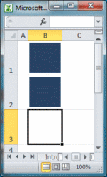
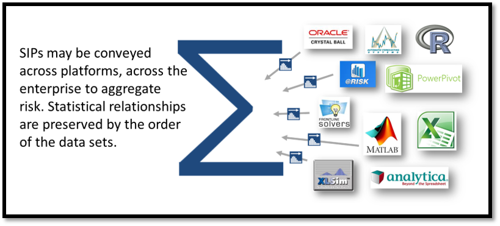
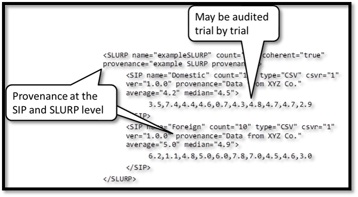

What is SIPmath?
The Stochastic Information Packet, or SIP, is an open standard for communicating uncertainties as arrays of outcomes. Calculating with SIPs is called SIPmath.
SIPmath is ActionableSIPs may be used in calculations using array arithmetic in any software environment. The Excel Data Table function, for example, can perform thousands of trials before your finger leaves the Enter key. See Distribution Processing and the Arithmetic of Uncertainty in Analytics Magazine.

SIPmath is AdditiveSIPs may be communicated across platforms, across the enterprise to aggregate risk. Statistical relationships are preserved by the order of the trials within the data sets. SIPmath is AuditableSIPs provide an unambiguous means of communicating uncertainty as data with provenance. Current formats include XLSX, XML, and CSV. |